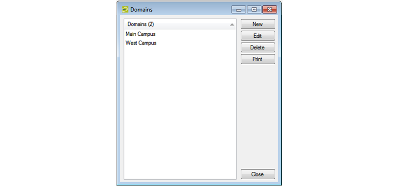
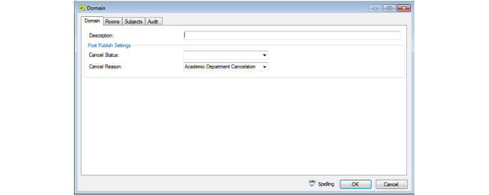

Configure Domains
A domain is a level of organization within an institution that defines scheduling responsibility. Functions such as synchronizing, optimizing, and running reports are carried out on a per domain basis. When you configure your domain, you must identify the subjects that are offered in the domain and you must also specify the rooms that are controlled by the domain. The subjects that are defined within a domain determine the courses listed for the domain. The rooms that are defined within a domain determine all spaces that are potentially scheduled by the courses. Subjects can belong to only one domain. Rooms can belong to multiple domains.
The term domain is controlled by an EMS system parameter (Campus: Domain Title Singular and Campus: Domain Title Plural), and it is often changed to Campus or School to better describe how course scheduling is divided. See Edit System Parameters.
Configuring Domains
- On the EMS Academic Planning menu bar, click Academic Planning > Configuration > Domains. The Domains window opens. This window lists all the domains that are currently configured in your EMS database.

- Click New. The Domain dialog box opens on the Domain tab.

- In the Description field, enter a name or description for the new domain.
The description can be a maximum of 50 characters, including spaces.
- On the Cancel Status drop-down list, select the status that is to be used for canceling the room bookings in EMS when a course date is canceled in the SIS after publishing.
- On the Cancel Reason drop-down list, select the reason that is to be used for cancellations after publishing.
- Open the Rooms tab, and optionally do one or both of the following:
- On the Available list, select the room (CTRL-click to select multiple rooms) that is to be controlled by the campus, and then Move (>) to the Selected list.
- Open the Subjects tab, and on the Available list, select the subject, or CTRL-click to select the multiple subjects that are offered by the campus, and then click the Move (>) button to move the selected subjects to the Selected list.
- Optionally, click Spelling to spell check the domain before you save it.
- Click OK. The Campus dialog box closes. You return to the Domains window the newly configured domain automatically selected.